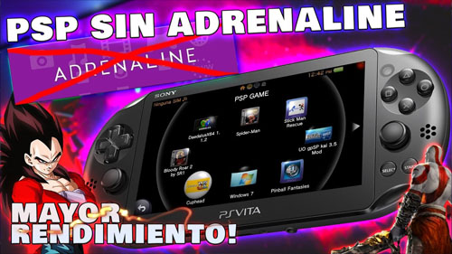

VitaShell Fork
VitaShell fork para PSP en PSVITA sin necesidad de Adrenaline con solo una burbuja
Para esta Guia
Requisitos para este tutorial
- PC o Notebook (Para pasar Archivos)
Programas para este Tutorial
Archivos Para descargar
| Archivos | Servidores | |
|---|---|---|
| VitaShell Fork | Mega | |
| WEB Oficial | github.com | |
Empezando este Tutorial
- Descargamos los archivos
- Descomprimimos los archivos .rar o .zip
- VitaShell v?.??
- Con la última versión disponible
- Una vez descargado nuestro archivo
- Lo extraemos y copiamos
- Para pasarlo a nuestra consola lo podemos pasar mediante USB o FTP
- Iniciamos VitaShell y le damos al
 dependiendo de lo hemos configurado nos saldrá USB o FTP.
dependiendo de lo hemos configurado nos saldrá USB o FTP. - Una vez pasada a nuestra consola lo instalamos el archivo VitaShell.vpk en nuestra consola
- Terminada la instalación salimos de VitaShell y en el menú de la consola tendremos el nuevo Icono flotando
- Antes de continuar
- Instalamos el plugin NoPspEmuDrm by Li
- Para esto abrimos AutoPlugin 2 y buscamos el plugin a instalar
- Reiniciamos y listo
- Activar las descargas EVOOT de PKGJ
- Para esto abrimos AutoPlugin 2
- Vamos a Extras/opciones para Config de PKGJ y en Instalar juegos de PSP como archivos EBOOT le damos a si para esto le damos a la
 y listo
y listo - Y cerramos la aplicación de AutoPlugin 2
- Para descargar nuestros juegos abrimos PKGJ
- Para esto le damos a
 y vamos a Show PSP games
y vamos a Show PSP games - Buscamos nuestro juego y le damos a y esperamos que descargue
- Después abrimos VitaShell Fork
- Para le damos a y después en Refresh LiveAria y esperamos
- Nos mostrara todos los juegos compatibles en el menú principal
- Y listo
- abriremos UltraISO consola.
- Una vez listo lo colocamos en nuestra consola desbloqueada pero no cerramos la tapa.
- Le damos al
 a FileBrowser
a FileBrowser - Presionamos
 y le damas a Copy
y le damas a Copy - Con para ir hacia atrás y vamos a MC0:/ con circulo


×